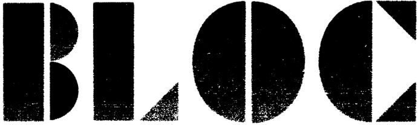
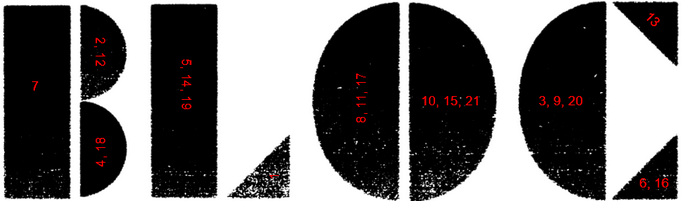

First, answer the crossword clues. Each of them is five letters long and the answers are in alphabetical order.
| Clue | Answer |
|---|---|
| Skeleton parts | BONES |
| SNL actor Yang | BOWEN |
| Possessor | OWNER |
| Cook or insult | ROAST |
| Look at Intently | STARE |
| 14 Pounds | STONE |
| Place where things are sold | STORE |
| Seattle WNBA team | STORM |
| Result of crying | TEARS |
| Steven King's "The Dark _____" | TOWER |
| Decreases | WANES |
| Dihydrogen Monoxide | WATER |
At this point, solvers should notice the following things:
When solvers piece these together, they should come to the conclusion that each tangram piece represents one of the letters ABEMNORSTW, and each clue's picture is formed by the set of pieces that spell the answer to the clue. Solvers can then find which letters associate with which tangram pieces by comparing two words that only differ by one letter. For example, if you compare BONES & BOWEN, the one tangram that is in BONES that isn't in BOWEN must be an S, and the one that is in BOWEN but not in BONES must be a W.
There is no one logical path - there are many different subsets of the clues that can uniquely identify each letter. Solvers should notice that each letter can correspond not only to a shape, but also can be uniquely identified to a particular rotation of that shape. (Significant progress on this puzzle can be made without recognizing this.) Identifying each of the shapes gives the following information:
| Letter | Shape |
|---|---|
| A | Small triangle with bottom-left right angle |
| B | Vertical bar |
| E | Horizontal bar |
| M | Small triangle with right angle on top |
| N | Top half of small oval |
| O | Top half of large oval |
| R | Small triangle with bottom-right right angle |
| S | Left half of large oval |
| T | Right half of large oval |
| W | Bottom half of small oval |
At this point, solvers need the location information for the puzzle. The individual tangram pieces come from the logo of Bloc cafe, as clued by the end of the flavor text. This cafe has some merchandise that uses all ten pieces of the logo as tangrams to create various designs, and the website rearranges the pieces as well.
This logo can be overlaid onto the rectangle on the bottom of the puzzle to assign the numbers to each piece.
Each piece, when rotated in such a way that the numbers are oriented correctly, correspond with one of the rotated tangram pieces from the first part of the puzzle. Now the table can be updated.
| Letter | Shape | Numbers |
|---|---|---|
| A | Small triangle with bottom-left right angle | 1 |
| B | Vertical bar | 7 |
| E | Horizontal bar | 5, 14, 19 |
| M | Small triangle with right angle on top | 13 |
| N | Top half of small oval | 2, 12 |
| O | Top half of large oval | 8, 11, 17 |
| R | Small triangle with bottom-right right angle | 6, 16 |
| S | Left half of large oval | 3, 9, 20 |
| T | Right half of large oval | 10, 15, 21 |
| W | Bottom half of small oval | 4, 18 |
Now, for each number from 1 through 21, take the letter associated with that number to spell ANSWER BOSTON METRO WEST.